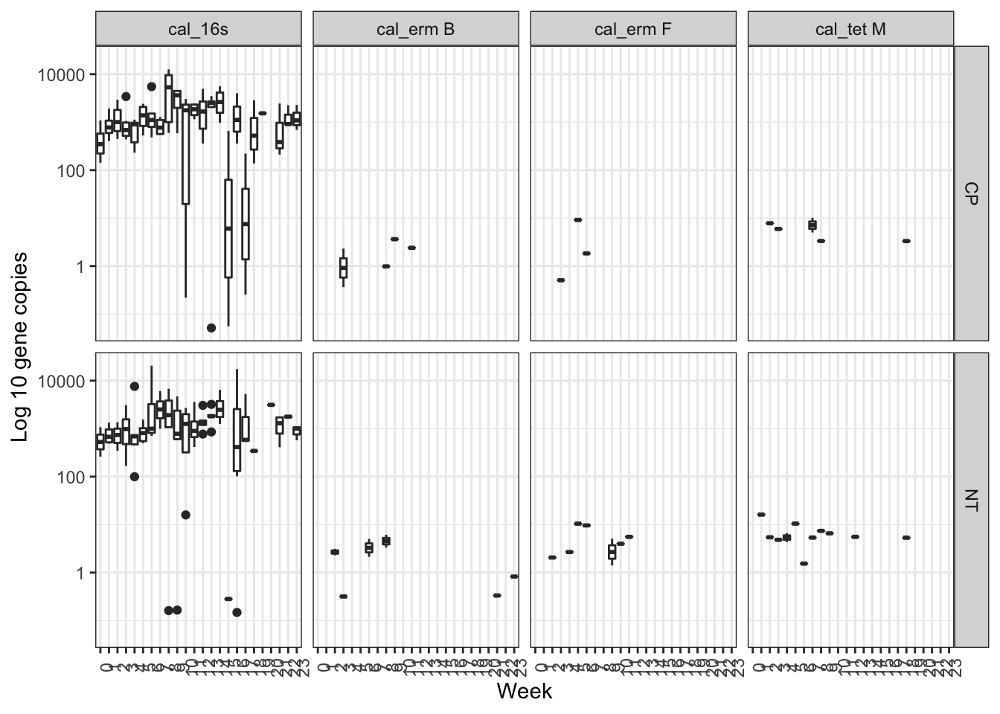
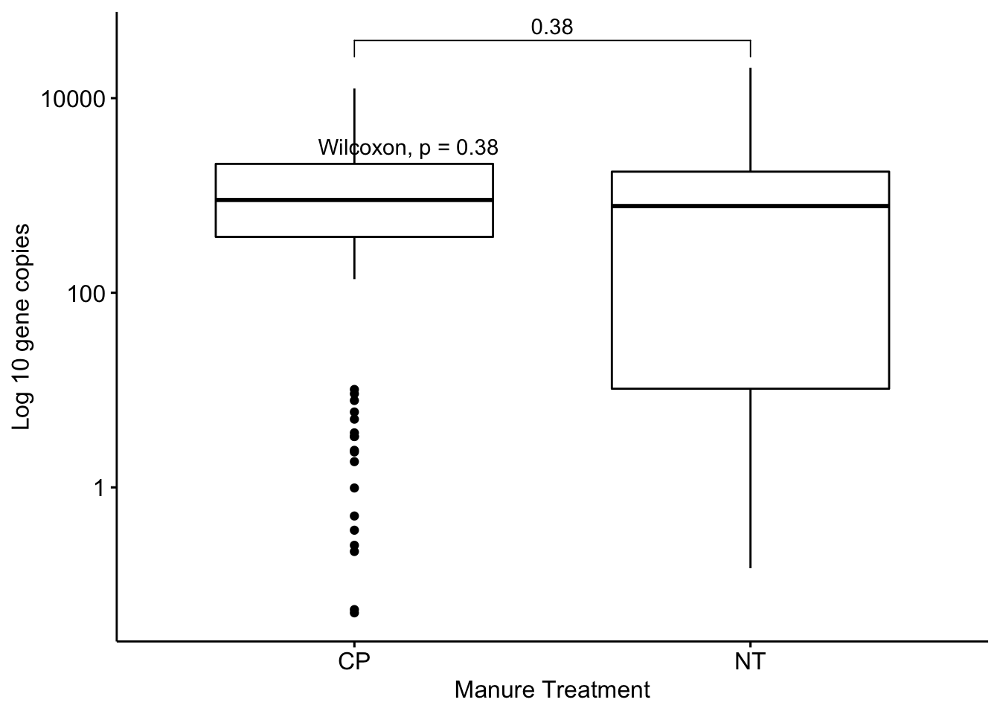
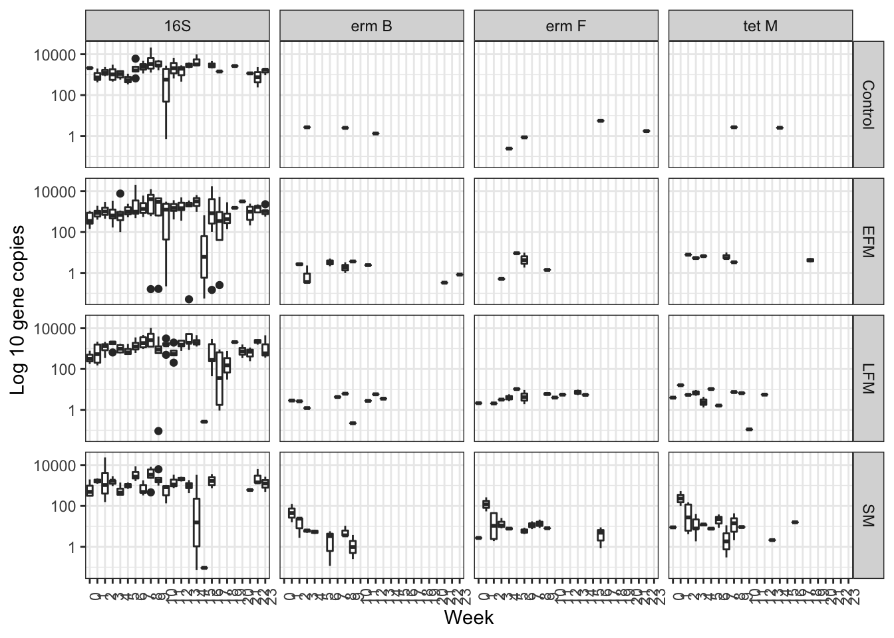
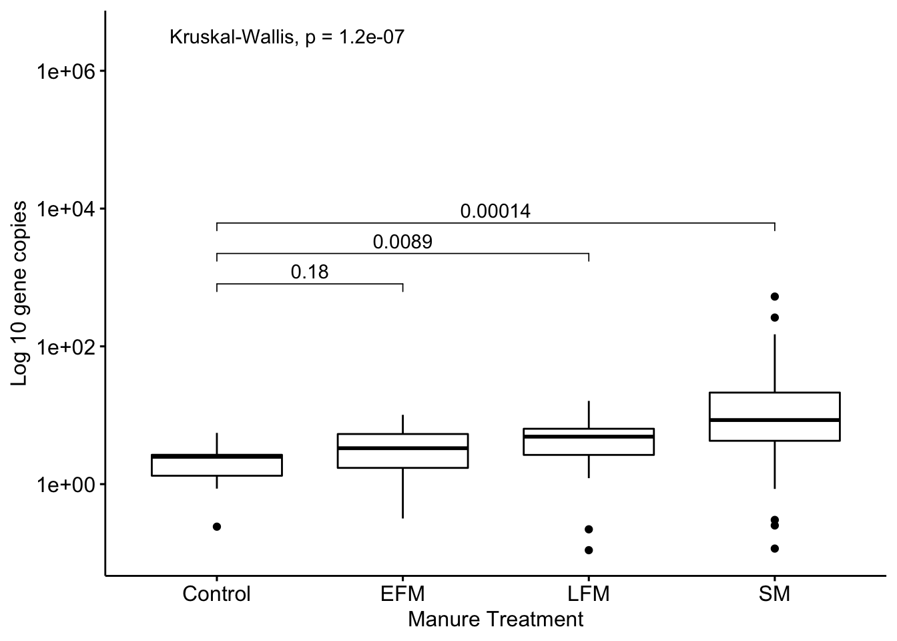

This site shows how to analyze wafergen data
library(reshape2)
library(ggplot2)
library(ggpubr)## Loading required package: magrittr#read data
chip1 <- read.table("../data/Lanying103018_Chip1.txt", sep="\t", header=T)[,c("Assay","Sample","Ct")]
chip2 <- read.table("../data/Lanying103018_Chip2.txt", sep="\t", header=T)[,c("Assay","Sample","Ct")]
dat <- rbind(chip1,chip2)
#get sample info
meta <- read.csv("../data/meta_data.csv")
#standard
meta_std <- read.csv("../data/meta_standard.csv")#########################
# function
########################
add_to_meta <- function(merged_meta_chip, chip, target, meta, meta_std, name_target, sample_id){
sub <- subset(chip, Assay %in% target)
casted <- dcast(sub, Sample~Assay, fun=mean, value.var = "Ct", na.rm=T)
merged_meta <- merge(merged_meta_chip, casted, by.x = sample_id, by.y="Sample")
meta_sub <- subset(meta_std, Assay %in% name_target)
data_sub <- subset(sub, Sample %in% meta_sub$Sample)
merged_std <- merge(data_sub, meta_sub, by.x = "Sample", by.y = "Sample", all.x=T)
merged_std_no_NA <- subset(merged_std, Ct != "NA")
quality_filtered <- subset(merged_std_no_NA, count > 10)
ct <- quality_filtered$Ct
count <- log10(quality_filtered$count+1)
lm.r <- lm(ct ~ count)
coef <- coef(lm.r)[2]
eff <- 100*((10^(-1/coef))-1)
inverse.lm <- lm(count ~ ct)
if (length(target) > 1){
merged_meta$mean_target<- rowMeans(merged_meta[,target], na.rm=T)
val = merged_meta$"mean_target"
}else{
val = merged_meta[,name_target]
}
merged_meta$temp<- 10^predict(inverse.lm ,data.frame(ct = val), interval = "predict")[,1]
names(merged_meta)[ncol(merged_meta)] <- paste0("cal_", name_target)
names(merged_meta)[ncol(merged_meta)-1] <- paste0("mean_", name_target)
return(merged_meta)
}###############
# Add 16S rRNA count
###############
name_target = "16s"
sample_id = "sample"
target <- c("16s")
merged_meta <- add_to_meta(meta, dat, target, meta, meta_std, name_target, sample_id)
#########################
# Add ermB count
########################
name_target = "erm B"
sample_id = "sample"
target <- c("erm B")
merged_meta <- add_to_meta(merged_meta, dat, target, meta, meta_std, name_target, sample_id)
#########################
# Add ermF count
########################
name_target = "erm F"
sample_id = "sample"
target <- c("erm F")
merged_meta <- add_to_meta(merged_meta, dat, target, meta, meta_std, name_target, sample_id)
#########################
# Add tetM count
########################
name_target = "tet M"
sample_id = "sample"
target <- c("tet M")
merged_meta <- add_to_meta(merged_meta, dat, target, meta, meta_std, name_target, sample_id)melted <- melt(merged_meta[,c("Year", "Week","Manure.Treatment", "Tillage","cal_16s","cal_erm B","cal_erm F","cal_tet M")], id = c("Year", "Week","Manure.Treatment", "Tillage"))
sub <- subset(melted, Tillage != "")
levels(melted$variable) <- c("16S","erm B","erm F","tet M")
ggplot(sub ,(aes(x=as.factor(Week), y=value)))+geom_boxplot()+facet_grid(Tillage~variable)+scale_y_continuous(trans='log10')+theme_bw()+theme(axis.text.x = element_text(angle=90))+labs(x="Week",y="Log 10 gene copies")## Warning: Removed 532 rows containing non-finite values (stat_boxplot).
sub <- subset(sub, variable != "16S")
y = subset(sub, Tillage=="NT")$value
x = subset(sub, Tillage=="CP")$value
t.test(x,y) #p-value = 0.3034##
## Welch Two Sample t-test
##
## data: x and y
## t = -0.013244, df = 222.53, p-value = 0.9894
## alternative hypothesis: true difference in means is not equal to 0
## 95 percent confidence interval:
## -627.5513 619.1725
## sample estimates:
## mean of x mean of y
## 1536.613 1540.802compare_means(value ~ Tillage, data=sub)## # A tibble: 1 x 8
## .y. group1 group2 p p.adj p.format p.signif method
## <chr> <chr> <chr> <dbl> <dbl> <chr> <chr> <chr>
## 1 value CP NT 0.380 0.38 0.38 ns Wilcoxonmy_comparisons <- list( c("NT", "CP"))
ggboxplot(sub, x="Tillage", y="value")+stat_compare_means(comparisons = my_comparisons)+scale_y_continuous(trans='log10')+labs(x="Manure Treatment",y="Log 10 gene copies")+stat_compare_means(label.y = 3.5)## Warning: Removed 532 rows containing non-finite values (stat_boxplot).## Warning: Removed 532 rows containing non-finite values (stat_signif).## Warning: Removed 532 rows containing non-finite values
## (stat_compare_means).
ggplot(melted,(aes(x=as.factor(Week), y=value)))+geom_boxplot()+facet_grid(Manure.Treatment~variable)+scale_y_continuous(trans='log10')+theme_bw()+theme(axis.text.x = element_text(angle=90))+labs(x="Week",y="Log 10 gene copies")## Warning: Removed 1144 rows containing non-finite values (stat_boxplot).
sub <- subset(melted, variable != "16S")
y = subset(sub, Manure.Treatment == "Control")$value
x = subset(sub, Manure.Treatment == "EFM")$value #p-value = 0.0643
t.test(x,y)##
## Welch Two Sample t-test
##
## data: x and y
## t = 2.1637, df = 26.838, p-value = 0.03956
## alternative hypothesis: true difference in means is not equal to 0
## 95 percent confidence interval:
## 0.08300272 3.14426584
## sample estimates:
## mean of x mean of y
## 3.843912 2.230278x = subset(sub, Manure.Treatment == "LFM")$value #p-value = 0.0003764
t.test(x,y)##
## Welch Two Sample t-test
##
## data: x and y
## t = 3.82, df = 32.706, p-value = 0.0005648
## alternative hypothesis: true difference in means is not equal to 0
## 95 percent confidence interval:
## 1.400614 4.594870
## sample estimates:
## mean of x mean of y
## 5.228020 2.230278x = subset(sub, Manure.Treatment == "SM")$value #p-value = 0.004758
t.test(x,y)##
## Welch Two Sample t-test
##
## data: x and y
## t = 3.0679, df = 68.441, p-value = 0.003087
## alternative hypothesis: true difference in means is not equal to 0
## 95 percent confidence interval:
## 9.487519 44.781993
## sample estimates:
## mean of x mean of y
## 29.365034 2.230278compare_means(value ~ Manure.Treatment, data=sub)## # A tibble: 6 x 8
## .y. group1 group2 p p.adj p.format p.signif method
## <chr> <chr> <chr> <dbl> <dbl> <chr> <chr> <chr>
## 1 value Control EFM 0.184 0.23 0.18435 ns Wilcoxon
## 2 value Control LFM 0.00892 0.027 0.00892 ** Wilcoxon
## 3 value Control SM 0.000144 0.00072 0.00014 *** Wilcoxon
## 4 value EFM LFM 0.116 0.23 0.11642 ns Wilcoxon
## 5 value EFM SM 0.0000122 0.000073 1.2e-05 **** Wilcoxon
## 6 value LFM SM 0.000165 0.00072 0.00016 *** Wilcoxonmy_comparisons <- list( c("Control", "EFM"), c("Control", "LFM"), c("Control", "SM"))
ggboxplot(sub, x="Manure.Treatment", y="value")+stat_compare_means(comparisons = my_comparisons)+scale_y_continuous(trans='log10')+labs(x="Manure Treatment",y="Log 10 gene copies")+stat_compare_means(label.y = 6.5)## Warning: Removed 1130 rows containing non-finite values (stat_boxplot).## Warning: Removed 1130 rows containing non-finite values (stat_signif).## Warning: Removed 1130 rows containing non-finite values
## (stat_compare_means).
Copyright © 2019 germslab. All rights reserved.